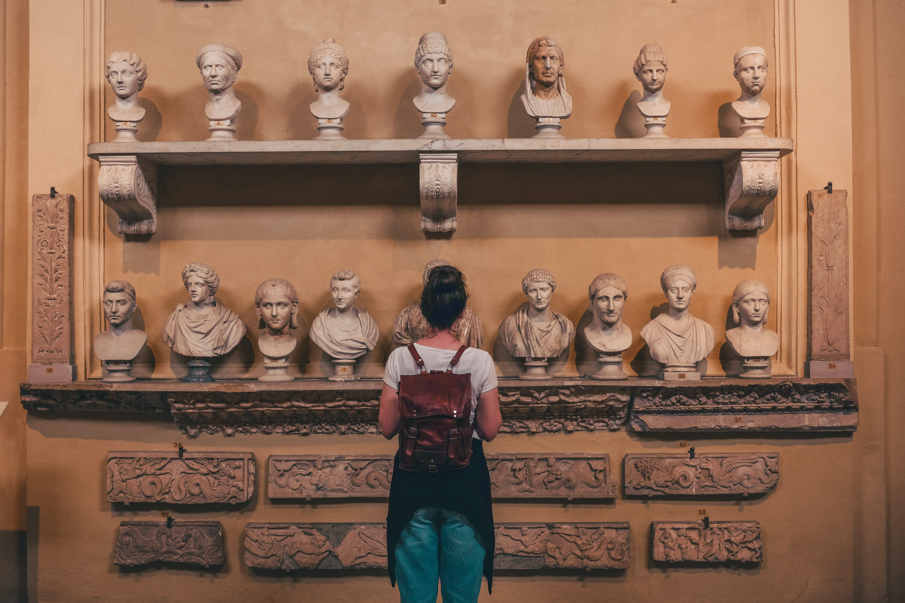
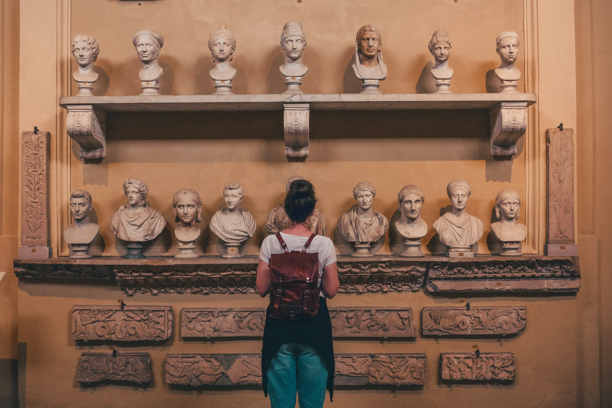
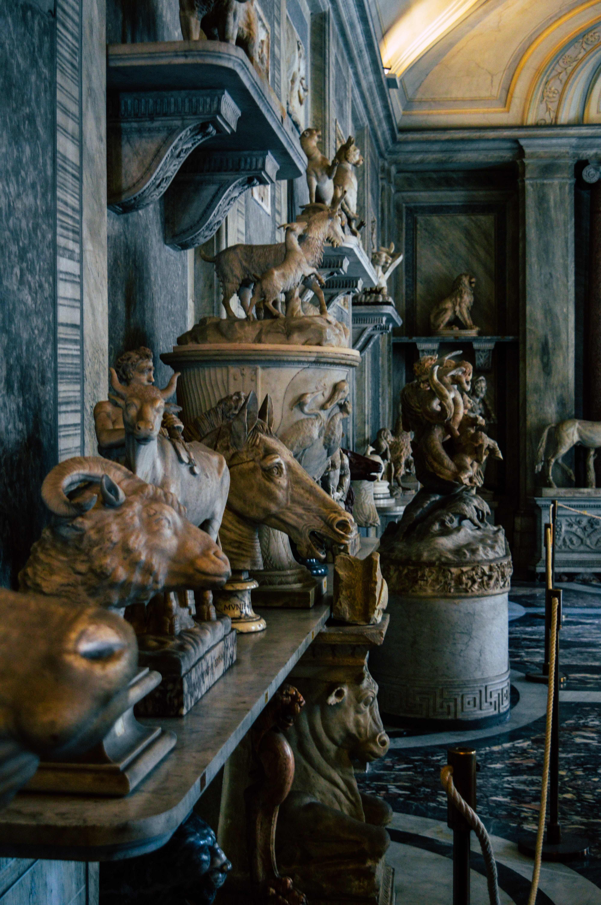
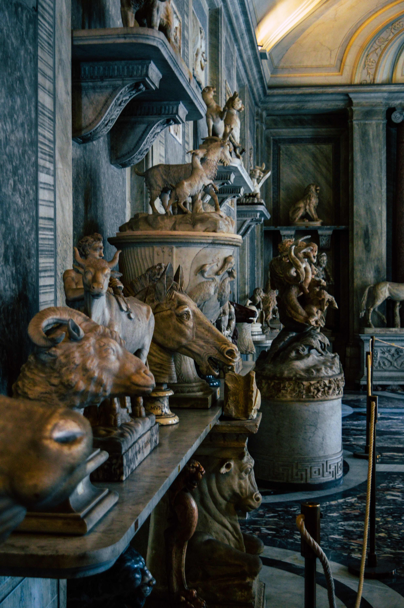

The Vatican City

The two must-see sights are St. Peter's Basilica and the Sistine Chapel, but the Vatican Palace contains magnificent rooms decorated by the greatest artists of their time, as well as priceless collections in more than a dozen museums. In addition to the major museums, smaller collections will appeal to specialized interests: the Museum of Secular Art's ancient sculpture, the Museum of Sacred Art's finds from catacombs and early Christian churches, the Map Gallery, a gallery of candelabras and tapestries, as well as objects brought back by missionaries, Papal carriages, vintage cars, and a collection of more than 800 works of modern religious art by Matisse, Dali, Munch, Rouault, and others. Discover the best things to see and do with our list of the top-rated tourist attractions in the Vatican.
Fun place to visit in vatican
vatican museum is the best place one can visit. It history and beauty are quite fascinating


 



 
